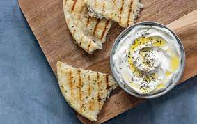

Odin Recipes Project
labaneh

Rated number one sandwich in the levant for a light breakfast or dinner!
A nice Labaneh sandwich with a hint of Palestinian Olive Oil and a generous sprinkle of homemade Zaatar with a few slices of tomato is truly one of the best sandwiches countries in the levant came up with.
Ingredients
- Labaneh (duh)
- Palestinian Olive Oil
- Zaatar
- 1 sliced tomato
- Freshly baked Pita bread
Steps
- Step 1: Grab a Pita bread and spread labaneh on the top part
- Step 2: Spread half a tea spoon of olive oil above the labaneh
- Step 3: Sprinkle a generous amount of Zaatar on top and make sure you don't put too much to avoid it from clumping into chunks
- Step 4: Either roll the sandwich or fold it in half (FYI: you can add tomatos to the sandwich if you're folding it
- Step 5: Enjoy!